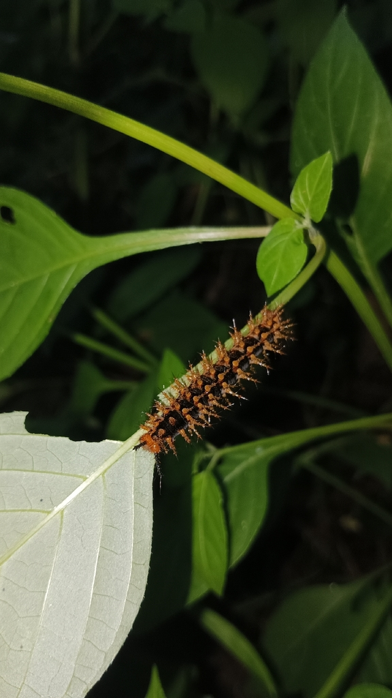

Mount Banahaw Montane Cloud Forest Survey
A multi-season assessment of epiphytic ferns, mossy cloud forest vegetation, and volcanic headwater streams that form the hydrological origin of Sariaya’s river network.
Sariaya, Quezon, is ecologically distinctive for its complete “ridge-to-reef” ecosystem. Situated between the volcanic heights of Mount Banahaw to the north and the marine waters of Tayabas Bay to the south, Sariaya shelters an extraordinary variety of habitats across a compact geographic corridor.

Dedicated to documenting, conserving, and communicating the interconnected ecological zones of Southern Luzon.
I am an environmental researcher and biodiversity photographer based in Quezon Province. My work centers on the ridge-to-reef corridor of Sariaya—an ecological transect where volcanic headwaters feed lush agro-forests, which in turn drain into estuarine mangrove nurseries and offshore coral reefs.
By capturing visual records and conducting spatial biodiversity assessments, this portfolio illustrates how upland conservation decisions directly influence marine fisheries and coastal protection in Tayabas Bay.
“Every drop of rainfall filtered through Banahaw’s mossy canopy carries life down through Sariaya’s rivers to nourish the seagrass beds of Tayabas Bay.”
Endemic species identification and botanical voucher collection.
Spatial corridor analysis and riparian buffer zone modeling.
High-resolution habitat documentation and species logging.
Collaborating with local fisherfolk and upland farming communities.
Highlighting three primary ecological zones documented across Sariaya's geographic corridor.
A multi-season assessment of epiphytic ferns, mossy cloud forest vegetation, and volcanic headwater streams that form the hydrological origin of Sariaya’s river network.
.jpg) Zone 02: Valley
Zone 02: Valley
Investigating biodiversity corridors traversing coconut groves, remnant dipterocarp forest patches, and riparian buffers that prevent soil erosion into downstream estuaries.
.jpg) Zone 03: Reef
Zone 03: Reef
Long-term ecological monitoring of Rhizophora mangrove restoration sites, mudflat benthic fauna, and nearshore marine sanctuaries bordering Tayabas Bay.
Filter specimen field records, trigger detailed modal views, and examine the ridge-to-reef mechanics of Sariaya.
Filter biodiversity portfolio records by ecological zone.
Zone: Mount Banahaw Volcanic Slope (1,850m)
Key epiphyte indicator of cloud moisture saturation and pristine air purity.
Midland Transition
Zone: Riparian Agro-Forestry Corridor (420m)
Vital bio-indicator signaling riparian buffer stability between farms and rivers.
Coastal Estuary
Zone: Tayabas Bay Coastal Mangrove Fringe (2m)
Storm-surge barrier and primary nursery for commercial reef fish of Tayabas Bay.
Click each habitat transition to understand the environmental connections in Sariaya.
Mount Banahaw's dormant volcanic cone acts as a natural water tower for the municipality of Sariaya. Its dense cloud forests capture atmospheric moisture via mist interception, replenishing deep aquifers and feeding the major river channels that flow directly south into Tayabas Bay.
Between the mountain slopes and the ocean lies Sariaya's fertile midland plain. Well-maintained agro-forestry systems and native riparian vegetation act as biological filters, preventing agricultural runoff from choking the delicate mangrove estuaries downstream.
Tayabas Bay serves as a productive marine sanctuary. The extensive mangrove belts along Sariaya's 33-kilometer shoreline provide indispensable spawning nurseries for fish and crustaceans while protecting coastal communities from seasonal typhoons and tidal surges.
Interested in biodiversity data sharing, academic fieldwork, or conservation partnerships in Sariaya, Quezon? Send a message below.
Sariaya Ecological Field Station
Quezon Province, 4322 Philippines
Monday – Friday: 07:00 – 17:00 PHT
Weekend Surveys by appointment